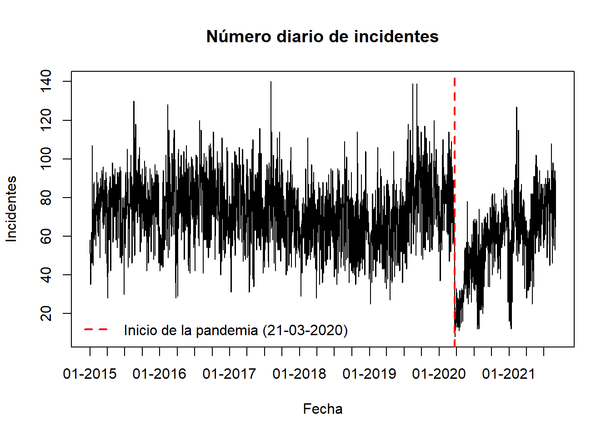
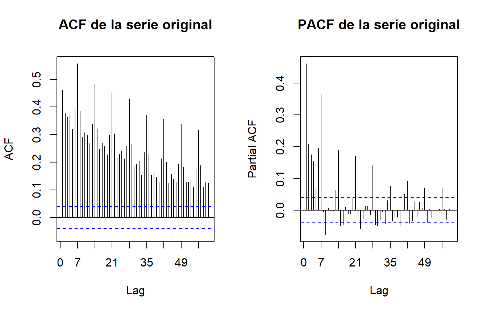
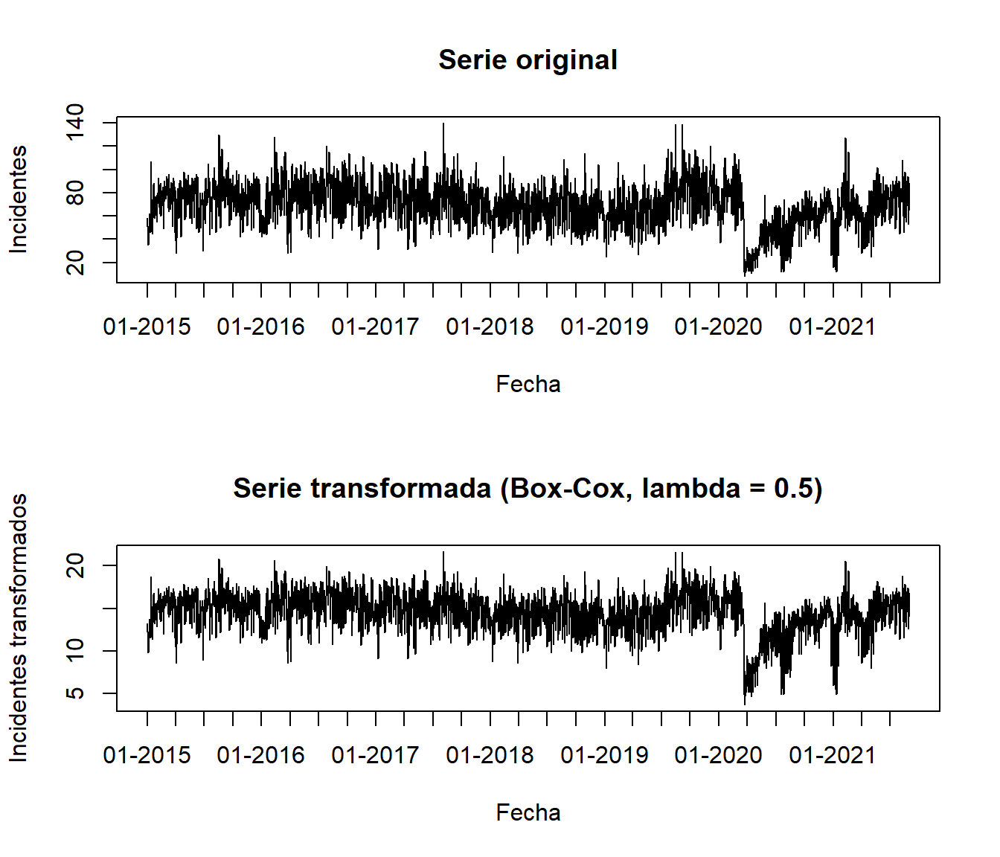
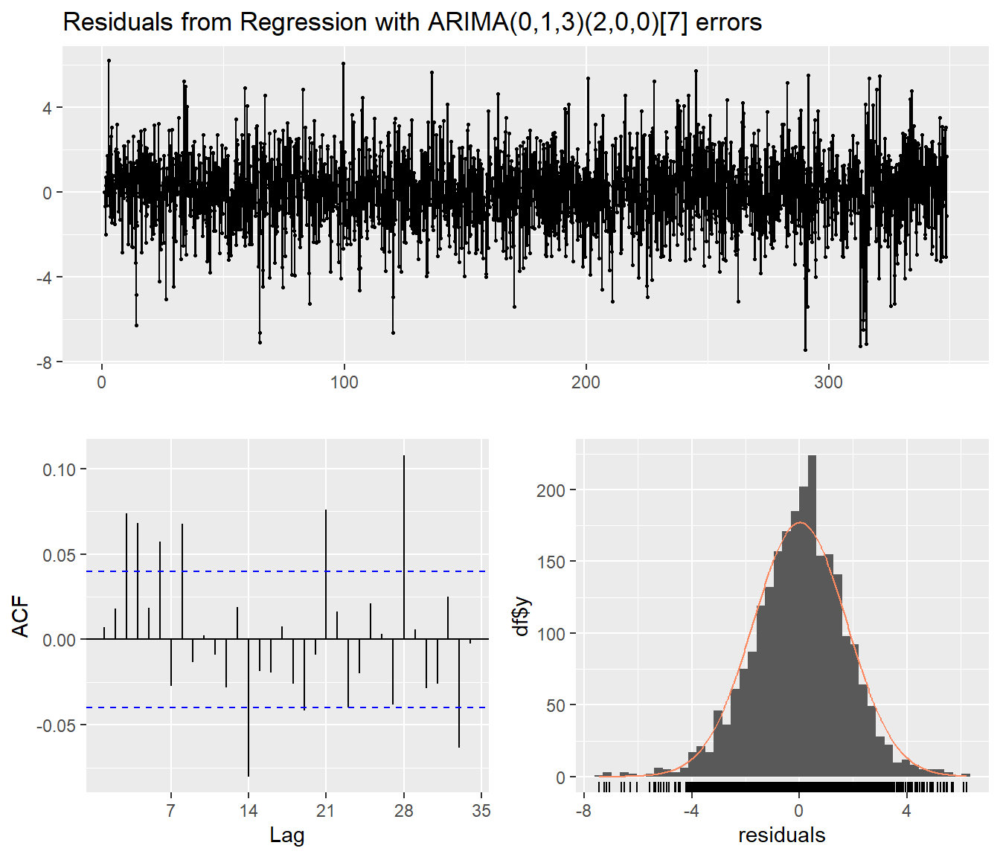
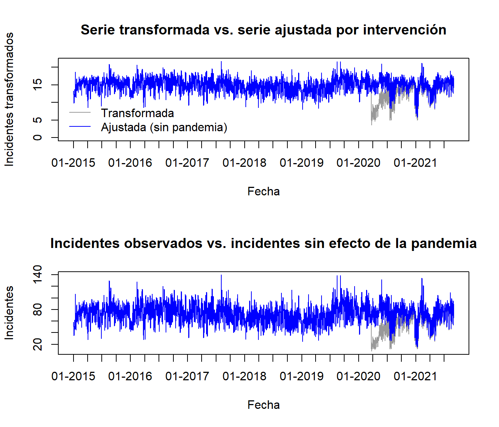
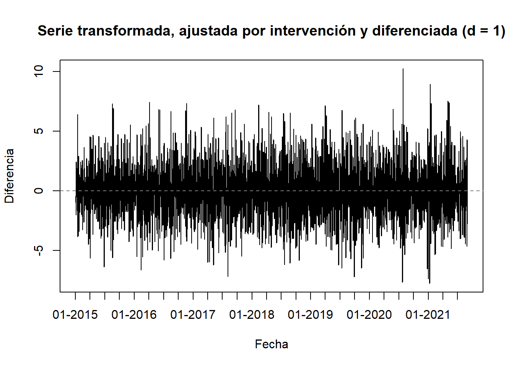
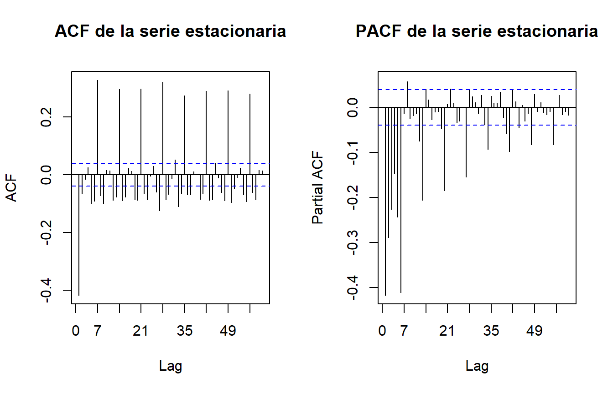

library(readxl)
library(forecast)
library(urca)Trabajo final de Series de tiempo
Preparación de los datos
Cargar base de datos
datos <- read_excel("../datos/incidentes_viales_motos.xlsx")Construir la serie diaria de incidentes
datos$FECHA_INCIDENTE <- as.Date(datos$FECHA_INCIDENTE)
datos$NRO_RADICADO <- as.character(datos$NRO_RADICADO)
datos <- datos[!is.na(datos$FECHA_INCIDENTE), ]
# Se cuenta cada radicado una sola vez por fecha.
datos <- unique(datos[
!is.na(datos$NRO_RADICADO) & datos$NRO_RADICADO != "",
c("NRO_RADICADO", "FECHA_INCIDENTE")
])
# Se completa el calendario para incluir los días sin incidentes.
fechas <- seq(min(datos$FECHA_INCIDENTE),
max(datos$FECHA_INCIDENTE),
by = "day")
conteo <- tabulate(
match(datos$FECHA_INCIDENTE, fechas),
nbins = length(fechas)
)
# Serie de tiempo diaria con estacionalidad semanal (frecuencia = 7)
y <- ts(conteo, frequency = 7)Función auxiliar para dibujar el eje de fechas cada tres meses
eje_fechas <- function() {
axis.Date(1,
at = seq(min(fechas), max(fechas), by = "3 months"),
format = "%m-%Y")
}Paso 1. Graficar la serie, ACF y PACF
1.1 Identificar el evento (la pandemia)
La caída de 2020 es un evento externo conocido, por eso en este trabajo aplicamos un análisis de intervención (Box y Tiao, 1975) dentro del proceso. Primero hay que ubicar la fecha exacta en que cambia el comportamiento de la serie:
fecha_intervencion <- as.Date("2020-03-21")
inicio <- which(fechas == fecha_intervencion)
# Días alrededor del cambio
alrededor <- (inicio - 4):(inicio + 3)
data.frame(fecha = fechas[alrededor], incidentes = conteo[alrededor]) fecha incidentes
1 2020-03-17 68
2 2020-03-18 72
3 2020-03-19 65
4 2020-03-20 58
5 2020-03-21 18
6 2020-03-22 12
7 2020-03-23 8
8 2020-03-24 23El día 21-03-2020 el conteo pasa de 58 a 18 incidentes en un solo día, y se mantiene muy bajo durante semanas. Esa es la fecha de inicio de la intervención.
1.2 Serie, ACF y PACF originales
plot(fechas, conteo, type = "l",
main = "Número diario de incidentes",
xlab = "Fecha", ylab = "Incidentes",
xaxt = "n")
eje_fechas()
# Marca del inicio de la intervención
abline(v = fecha_intervencion, col = "red", lty = 2, lwd = 2)
legend("bottomleft", legend = "Inicio de la pandemia (21-03-2020)",
col = "red", lty = 2, lwd = 2, bty = "n")
par(mfrow = c(1, 2))
Acf(y, lag.max = 60, main = "ACF de la serie original")
Pacf(y, lag.max = 60, main = "PACF de la serie original")
par(mfrow = c(1, 1))La ACF decae muy lento y tiene picos en los rezagos 7, 14, 21, … (estacionalidad semanal: el número de incidentes depende del día de la semana). Además, la caída de 2020 introduce un cambio de nivel que infla la persistencia de la serie, así que estas gráficas no se pueden interpretar todavía: primero hay que tratar la intervención.
Paso 2. Transformar
Aquí se hacen dos ajustes previos a la identificación del modelo: estabilizar la varianza (Box-Cox) y remover el efecto de la pandemia (intervención).
2.1 Transformación Box-Cox (estabilizar la varianza)
El parámetro \(\lambda\) se estima con los datos anteriores a la pandemia, porque la caída de 2020 distorsiona la relación entre nivel y variabilidad.
y_pre <- ts(conteo[1:(inicio - 1)], frequency = 7)
lambda_total <- BoxCox.lambda(y)
lambda_pre <- BoxCox.lambda(y_pre)
c(lambda_toda_la_serie = lambda_total, lambda_pre_pandemia = lambda_pre)lambda_toda_la_serie lambda_pre_pandemia
0.8094025 0.5529466 Con los datos previos a la pandemia, \(\lambda \approx\) 0.55, que es prácticamente 0.5, es decir, la raíz cuadrada, la transformación típica para conteos. Se usa \(\lambda = 0.5\).
lambda <- 0.5
y_bc <- BoxCox(y, lambda)par(mfrow = c(2, 1))
plot(fechas, conteo, type = "l", xaxt = "n",
main = "Serie original", xlab = "Fecha", ylab = "Incidentes")
eje_fechas()
plot(fechas, y_bc, type = "l", xaxt = "n",
main = "Serie transformada (Box-Cox, lambda = 0.5)",
xlab = "Fecha", ylab = "Incidentes transformados")
eje_fechas()
par(mfrow = c(1, 1))2.2 Efecto de la pandemia (análisis de intervención)
Siguiendo a Box y Tiao, primero se identifica la dinámica “normal” de la serie con los datos antes del evento (modelo de ruido) y luego se agrega la variable de intervención.
Modelo de ruido (solo datos pre-pandemia):
y_bc_pre <- ts(y_bc[1:(inicio - 1)], frequency = 7)
modelo_pre <- auto.arima(y_bc_pre, stepwise = FALSE, approximation = FALSE)
modelo_preSeries: y_bc_pre
ARIMA(0,1,3)(2,0,0)[7]
Coefficients:
ma1 ma2 ma3 sar1 sar2
-0.8106 -0.0545 -0.1207 0.3067 0.2224
s.e. 0.0230 0.0308 0.0217 0.0229 0.0229
sigma^2 = 2.882: log likelihood = -3710.73
AIC=7433.45 AICc=7433.5 BIC=7466.77orden <- arimaorder(modelo_pre) # p, d, q, P, D, Q, periodoVariables de intervención. Se comparan tres formas de efecto:
- Sin intervención: el modelo ignora la pandemia.
- Escalón: vale 0 antes del 21-03-2020 y 1 después (cambio de nivel permanente).
- Pulso con decaimiento exponencial: vale 1 el día del inicio y luego se desvanece como \(\delta^{t}\) (caída fuerte que se va recuperando poco a poco). El valor de \(\delta\) se elige minimizando el AICc.
t_rel <- seq_along(conteo) - inicio # días desde el inicio de la pandemia
escalon <- as.numeric(t_rel >= 0)
decaimiento <- function(delta) ifelse(t_rel >= 0, delta^t_rel, 0)
# Ajusta el mismo modelo de ruido, cambiando solo el regresor externo
ajustar <- function(xreg = NULL) {
Arima(y_bc,
order = orden[1:3],
seasonal = list(order = orden[4:6], period = 7),
xreg = xreg)
}
# Mejor delta para el decaimiento
buscar_delta <- optimize(
function(d) ajustar(cbind(decaimiento = decaimiento(d)))$aicc,
interval = c(0.95, 0.999)
)
delta <- round(buscar_delta$minimum, 3)
delta[1] 0.992m_sin <- ajustar()
m_esc <- ajustar(cbind(escalon = escalon))
m_dec <- ajustar(cbind(decaimiento = decaimiento(delta)))
comparacion <- data.frame(
modelo = c("Sin intervención", "Escalón", paste0("Decaimiento (delta = ", delta, ")")),
AICc = c(m_sin$aicc, m_esc$aicc, m_dec$aicc)
)
comparacion$AICc <- round(comparacion$AICc, 1)
comparacion modelo AICc
1 Sin intervención 9736.1
2 Escalón 9646.9
3 Decaimiento (delta = 0.992) 9626.4El pulso con decaimiento tiene el menor AICc por mucha diferencia, así que describe mejor lo que pasó: una caída brusca seguida de una recuperación gradual (un escalón supone que el nivel se queda abajo para siempre, y no es lo que muestra la serie).
Modelo final con intervención:
modelo_int <- m_dec
modelo_intSeries: y_bc
Regression with ARIMA(0,1,3)(2,0,0)[7] errors
Coefficients:
ma1 ma2 ma3 sar1 sar2 decaimiento
-0.8096 -0.0507 -0.1244 0.3167 0.1886 -9.1187
s.e. 0.0204 0.0270 0.0194 0.0205 0.0204 0.6886
sigma^2 = 3.041: log likelihood = -4806.18
AIC=9626.35 AICc=9626.4 BIC=9666.93beta <- coef(modelo_int)["decaimiento"]
ee <- sqrt(diag(vcov(modelo_int)))["decaimiento"]
data.frame(coeficiente = round(beta, 3),
error_est = round(ee, 3),
z = round(beta / ee, 1),
row.names = "decaimiento") coeficiente error_est z
decaimiento -9.119 0.689 -13.2# Interpretación del efecto en número de incidentes
dia0_sin_pandemia <- median(conteo[(inicio - 28):(inicio - 1)]) # nivel típico previo
dia0_con_pandemia <- InvBoxCox(BoxCox(dia0_sin_pandemia, lambda) + beta, lambda)
vida_media <- log(0.5) / log(delta)
cat("Nivel típico antes de la pandemia:", dia0_sin_pandemia, "incidentes/día\n")Nivel típico antes de la pandemia: 74 incidentes/díacat("Nivel estimado el primer día de pandemia:", round(dia0_con_pandemia), "incidentes/día\n")Nivel estimado el primer día de pandemia: 16 incidentes/díacat("Caída inicial estimada:", round(100 * (1 - dia0_con_pandemia / dia0_sin_pandemia)), "%\n")Caída inicial estimada: 78 %cat("Vida media del efecto:", round(vida_media), "días\n")Vida media del efecto: 86 díasEl coeficiente es negativo y muy significativo (z = -13.2): según el modelo, la pandemia redujo los incidentes en cerca de un 78 % el primer día, y el efecto se fue disipando con una vida media de 86 días (casi tres meses).
Diagnóstico de residuos del modelo con intervención:
checkresiduals(modelo_int)
Ljung-Box test
data: Residuals from Regression with ARIMA(0,1,3)(2,0,0)[7] errors
Q* = 66.629, df = 9, p-value = 6.949e-11
Model df: 5. Total lags used: 14Los residuos son pequeños y sin tendencia, sus autocorrelaciones son bajas (todas menores a 0.11 en valor absoluto) y su distribución es aproximadamente normal. Con más de 2.400 observaciones, la prueba de Ljung-Box es muy exigente y rechaza el ruido blanco por correlaciones pequeñas, así que este modelo es adecuado para estimar el efecto de la pandemia, pero los órdenes ARIMA se afinan más adelante con lo que muestre el Paso 5.
Serie ajustada (sin el efecto de la pandemia). Se resta el efecto estimado a la serie transformada. Esta es la serie que se usa de aquí en adelante:
efecto <- beta * decaimiento(delta)
z <- y_bc - efecto # serie transformada y ajustada por intervención
z <- ts(as.numeric(z), frequency = 7)par(mfrow = c(2, 1))
plot(fechas, y_bc, type = "l", xaxt = "n", col = "gray60",
ylim = c(0, max(y_bc)),
main = "Serie transformada vs. serie ajustada por intervención",
xlab = "Fecha", ylab = "Incidentes transformados")
lines(fechas, z, col = "blue")
eje_fechas()
legend("bottomleft", legend = c("Transformada", "Ajustada (sin pandemia)"),
col = c("gray60", "blue"), lty = 1, bty = "n")
# Misma comparación en número de incidentes
plot(fechas, conteo, type = "l", xaxt = "n", col = "gray60",
main = "Incidentes observados vs. incidentes sin efecto de la pandemia",
xlab = "Fecha", ylab = "Incidentes")
lines(fechas, InvBoxCox(z, lambda), col = "blue")
eje_fechas()
par(mfrow = c(1, 1))La caída principal de 2020 desaparece de la serie ajustada. Todavía se ven algunas caídas puntuales (a mediados de 2020 y a comienzos de 2021) que podrían corresponder a nuevas restricciones; no se modelan en este trabajo.
Paso 3. Diferenciar
Se usa la serie ajustada z. Primero se verifica cuántas diferencias sugieren las pruebas (regular y estacional):
data.frame(
prueba = c("KPSS", "ADF", "PP"),
diferencias_regulares = c(ndiffs(z, test = "kpss"),
ndiffs(z, test = "adf"),
ndiffs(z, test = "pp"))
) prueba diferencias_regulares
1 KPSS 1
2 ADF 0
3 PP 0data.frame(
prueba = c("seas", "ocsb"),
diferencias_estacionales = c(nsdiffs(z, test = "seas"),
nsdiffs(z, test = "ocsb"))
) prueba diferencias_estacionales
1 seas 0
2 ocsb 0Las pruebas no coinciden en la diferencia regular (KPSS pide una; ADF y PP ninguna), por eso en el Paso 4 se revisa con ambas pruebas a la vez. En cuanto a la diferencia estacional, ninguna prueba la pide: el patrón semanal es estable y se puede modelar con términos autorregresivos estacionales sin diferenciar.
Se aplica una diferencia regular (d = 1):
z1 <- diff(z, differences = 1)Paso 4. Revisar la raíz unitaria
Se usan dos pruebas con hipótesis contrarias:
- ADF (Dickey-Fuller aumentada): \(H_0\): hay raíz unitaria (no estacionaria). Se rechaza si el estadístico es menor que el valor crítico.
- KPSS: \(H_0\): la serie es estacionaria. Se rechaza si el estadístico es mayor que el valor crítico.
La serie se considera estacionaria solo cuando las dos pruebas coinciden (ADF rechaza y KPSS no rechaza).
prueba_raiz_unitaria <- function(x, nombre) {
x <- as.numeric(x)
adf <- ur.df(x, type = "drift", selectlags = "AIC", lags = 21)
kpss <- ur.kpss(x, type = "mu") # configuración por defecto (lags = "short")
adf_est <- adf@teststat[1, "tau2"]
adf_crit <- adf@cval["tau2", "5pct"]
kpss_est <- kpss@teststat
kpss_crit <- kpss@cval[1, "5pct"]
adf_ok <- adf_est < adf_crit # TRUE = rechaza raíz unitaria
kpss_ok <- kpss_est < kpss_crit # TRUE = no rechaza estacionariedad
data.frame(
serie = nombre,
ADF_estadistico = round(adf_est, 2),
ADF_critico_5 = adf_crit,
ADF_resultado = ifelse(adf_ok, "sin raíz unitaria", "raíz unitaria"),
KPSS_estadistico = round(kpss_est, 3),
KPSS_critico_5 = kpss_crit,
KPSS_resultado = ifelse(kpss_ok, "estacionaria", "no estacionaria"),
estacionaria = ifelse(adf_ok & kpss_ok, "SÍ", "NO")
)
}resultados <- rbind(
prueba_raiz_unitaria(y_bc, "Transformada (sin ajustar)"),
prueba_raiz_unitaria(z, "Ajustada, d = 0"),
prueba_raiz_unitaria(z1, "Ajustada, d = 1")
)
resultados serie ADF_estadistico ADF_critico_5 ADF_resultado
1 Transformada (sin ajustar) -4.27 -2.86 sin raíz unitaria
2 Ajustada, d = 0 -6.20 -2.86 sin raíz unitaria
3 Ajustada, d = 1 -15.36 -2.86 sin raíz unitaria
KPSS_estadistico KPSS_critico_5 KPSS_resultado estacionaria
1 4.554 0.463 no estacionaria NO
2 0.825 0.463 no estacionaria NO
3 0.003 0.463 estacionaria SÍLectura.
- En la serie transformada sin ajustar por la pandemia, el estadístico KPSS es muy alto (4.554): el cambio de nivel de 2020 hace que la serie parezca no estacionaria. Al quitar el efecto de la pandemia (serie ajustada) baja a 0.825, lo que confirma que parte del problema era la intervención.
- Con
d = 0las pruebas no coinciden (ADF rechaza la raíz unitaria, pero KPSS rechaza la estacionariedad): la serie no se puede declarar estacionaria. - Con
d = 1las dos pruebas coinciden: ADF rechaza la raíz unitaria y KPSS no rechaza la estacionariedad. La serie ya es estacionaria.
# KPSS con ventana larga (más rezagos) para revisar qué tan sensible es el resultado con d = 0
kpss_largo <- ur.kpss(as.numeric(z), type = "mu", lags = "long")@teststatKPSS depende del número de rezagos que se use. Con la ventana larga, el estadístico de la serie ajustada con d = 0 baja a 0.42, cerca del valor crítico (0.463), así que ese caso es un límite. Como ADF y KPSS no coinciden, y además ndiffs con KPSS pide una diferencia, se toma la decisión conservadora de diferenciar una vez. Es también lo que eligió auto.arima en el modelo de ruido con los datos pre-pandemia.
Paso 5. Graficar la nueva serie, ACF y PACF
plot(fechas[-1], z1, type = "l", xaxt = "n",
main = "Serie transformada, ajustada por intervención y diferenciada (d = 1)",
xlab = "Fecha", ylab = "Diferencia")
eje_fechas()
abline(h = 0, col = "gray50", lty = 2)
par(mfrow = c(1, 2))
Acf(z1, lag.max = 60, main = "ACF de la serie estacionaria")
Pacf(z1, lag.max = 60, main = "PACF de la serie estacionaria")
par(mfrow = c(1, 1))La serie fluctúa alrededor de cero con variabilidad estable y ya no se ve la caída de 2020.
- ACF: hay un pico negativo grande en el rezago 1 (cerca de -0.4), que indica una componente de media móvil regular (MA). Después aparecen picos positivos en los rezagos 7, 14, 21, … que casi no decaen: es el ciclo semanal, que se mantiene estable (por eso
nsdiffsno pidió diferencia estacional). - PACF: valores negativos que decaen poco a poco en los primeros rezagos, un patrón típico de una componente MA.
Esto sugiere un modelo de la forma SARIMA(0,1,q)(P,0,0)[7] con intervención. Los órdenes exactos (q y P) se definen al estimar y comparar modelos; como punto de partida sirve el modelo de ruido identificado con los datos pre-pandemia en el Paso 2:
modelo_preSeries: y_bc_pre
ARIMA(0,1,3)(2,0,0)[7]
Coefficients:
ma1 ma2 ma3 sar1 sar2
-0.8106 -0.0545 -0.1207 0.3067 0.2224
s.e. 0.0230 0.0308 0.0217 0.0229 0.0229
sigma^2 = 2.882: log likelihood = -3710.73
AIC=7433.45 AICc=7433.5 BIC=7466.77